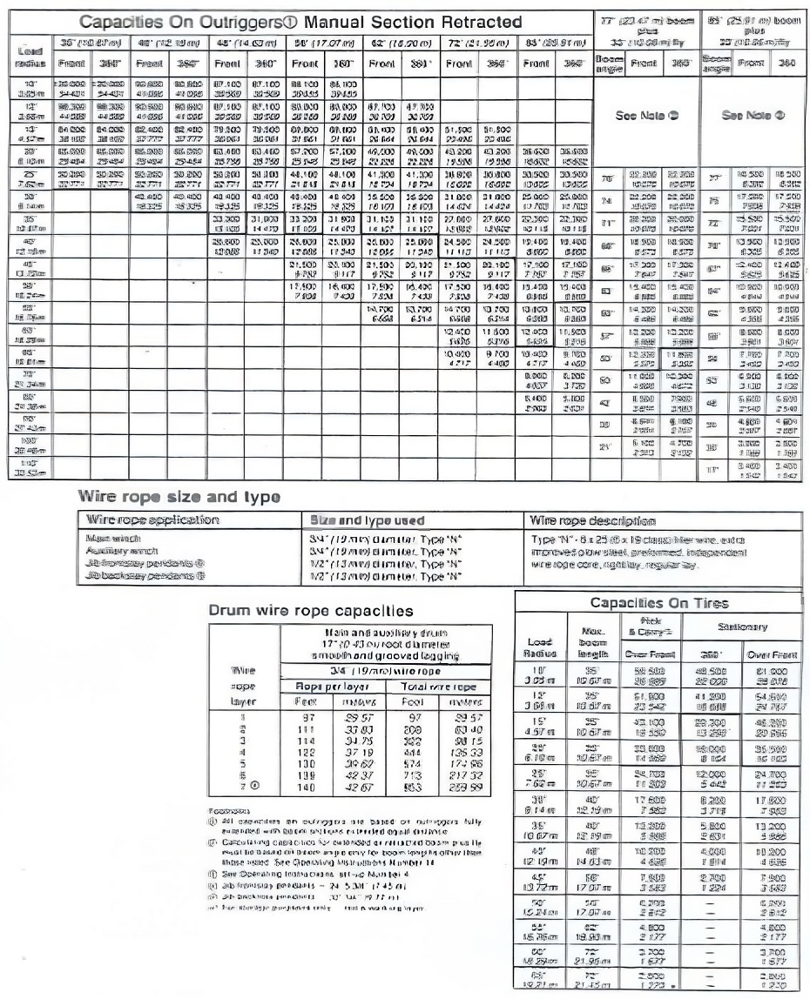
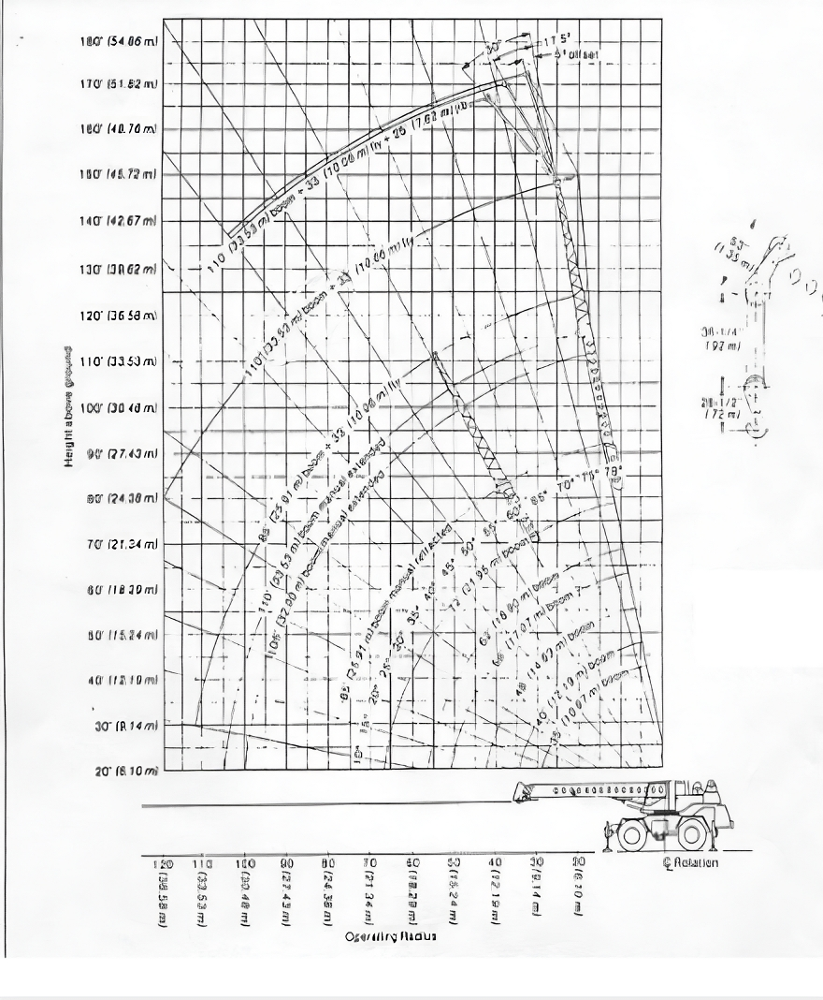

Regresar
CONOCIMIENTOS GENERALES


101) De acuerdo a los antecedentes entregados, se puede izar la carga sin emplear los estabilizadores:
a. Verdadero.
b. Falso.
Verificar
102) Si tengo los datos de largo de pluma y ángulo puedo determinar el peso a izar:
a. Verdadero.
b. Falso.
Verificar
103) De acuerdo a la misma curva, se puede transportar carga sujeta al gancho:
a. Verdadero.
b. Falso.
Verificar
104) La curva de carga ya considera el peso del gancho:
a. Verdadero.
b. Falso.
Verificar
105) Cualquier curva de carga, siempre y cuando sea de un equipo de la misma capacidad, puede emplearse para cualquier equipo:
a. Verdadero.
b. Falso.
Verificar
106) Para qué sirve la tabla de carga facilitada:
a. Para calcular el peso.
b. Para calcular el angulo.
a. Para calcular el radio.
b. Solo A y C.
Verificar
107) Para qué sirve el grafico de ángulos entregado:
a. Para calcular el radio.
b. Para calcular el angulo.
c. Para calcular la altura.
d. Todas las anteriores.
Verificar
108) La línea negra que aparece en la curva de carga, que indica:
a. Nada.
b. Divide la tabla de carga en riesgo de operacion, sobre menor riesgo, bajo mayor riesgo.
c. Falla estructural y falla de volcamiento.
d. Ninguna de las anteriores.
Verificar
109) Como se representa falla al volcamiento en la tabla de carga facilitada:
a. Con un asterisco.
b. Valores sobre línea negra divisoria.
c. Valores bajo línea negra divisoria.
d. A y B.
Verificar
110) Como se representa la falla estructural en la tabla de carga facilitada:
a. No se representa.
b. Con una barra.
c. Valores sobre la linea divisoria.
d. Ninguna de las anteriores.
Verificar
111) Para utilizar esta tabla de carga que condiciones debe cumplir el equipo:
a. Estar nivelado en 0°.
b. Estabilizadores 100% extendidos.
c. Estar en perfectas condiciones.
d. Solo A y B.
Verificar
112) De acuerdo a la curva de carga que se le ha facilitado, la capacidad máxima de carga con 62 pies de pluma, antes de la línea de volteo es:
a. 23.500 lbs.
b. 26.800 lbs.
c. 31.100 lbs.
d. Solo A y B.
Verificar
113) De acuerdo a esta misma curva de carga, cuanto es el máximo de libras que pueden levantar con toda la pluma extendida y 18,2 mts. de radio, en 360°:
a. 9.500 lbs.
b. 11.500 lbs.
c. 12.200 lbs.
d. Ninguna de las anteriores.
Verificar
114) De acuerdo a la curva de carga entregada, si se requiere levantar una carga de 6.260 kilogramos, a que radio, largo de pluma y ángulo debe ejecutar la maniobra:
a. Radio 16,76 mts, Pluma 21,95 mts, Angulo 55°.
b. Radio 18,29 mts, Pluma 25,91 mts, Angulo 50.
c. Radio 16,76 mts, Pluma 25,91 mts, Angulo 45°.
d. Ninguna de las anteriores.
Verificar
115) Para levantar una carga de 15.340 libras, según curva de carga entregada a que radio se puede realizar, con cuanta pluma y a que ángulo:
a. Radio 50 pies, Pluma 85 pies, Angulo 50°.
b. Radio 55 pies, Pluma 72 pies, Angulo 35°.
c. Radio 60 pies, Pluma 85 pies, Angulo 40°.
d. Ninguna de las anteriores.
Verificar
116) Para izar una carga de 25.000 kg, a que radio, largo de pluma y ángulo podría realizar esta operación:
a. Radio 16,19 mts, Pluma 17,07 mts, Angulo 55°.
b. Radio 12,19 mts, Pluma 17,07 mts, Angulo 40°.
c. Radio 6,10 mts, Pluma 17,07 mts, Angulo 65°.
d. Ninguna de las anteriores.
Verificar
117) En el gráfico de ángulo adjunto indique a que grados debe estar la pluma con 105 pies de pluma y 50 pies de radio:
a. 50°.
b. 35°.
c. 40°.
d. 60°.
Verificar
118) En el gráfico de ángulo adjunto indique a que grados debe estar la pluma con 21,9 mts. de pluma y 6,1 mts. de radio:
a. 50°.
b. 35°.
c. 40°.
d. 70°.
Verificar
119) Cuáles son los ángulos máximo y mínimo que puede operar este equipo:
a. 10° a 78°.
b. 0° a 78°.
c. 0° a 100°.
d. Ninguna de las anteriores.
Verificar
120) Cuál es la capacidad máxima de este equipo:
a. 120.000 lbs.
b. 54.431 kgs.
c. A y B.
d. Ninguna de las anteriores.
Verificar
1
2
3
4
5
6
7
8
9